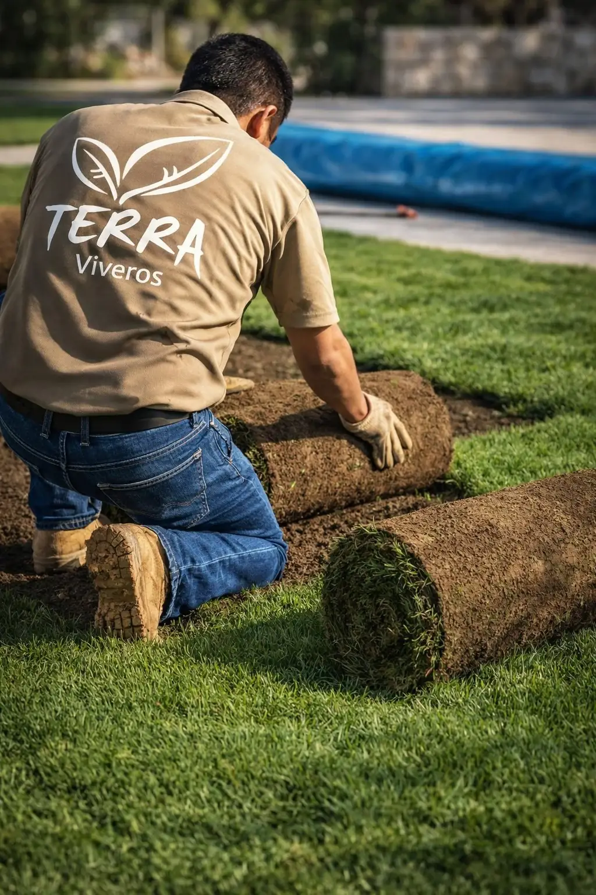
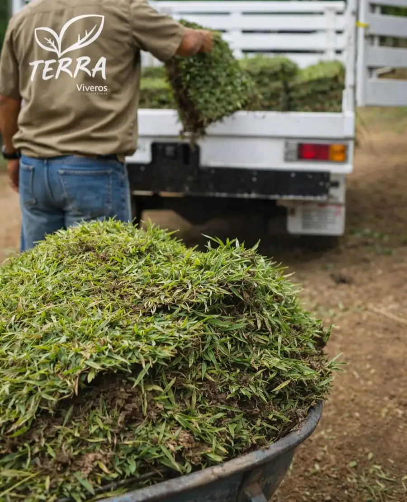
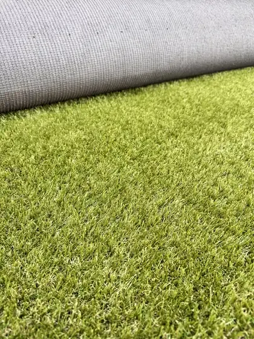
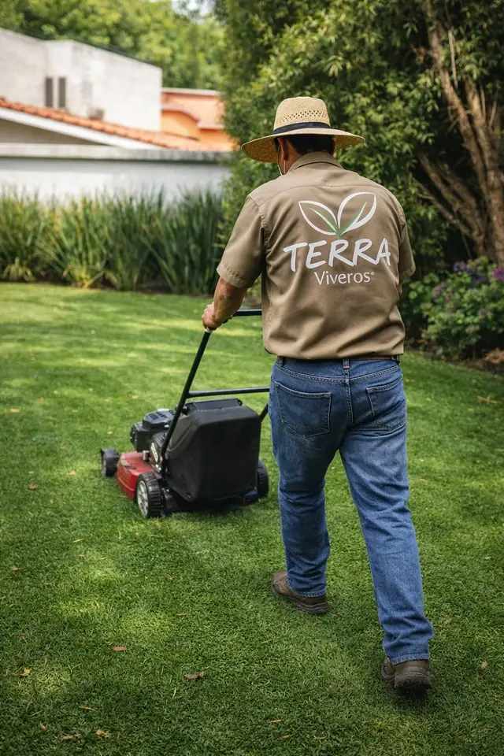
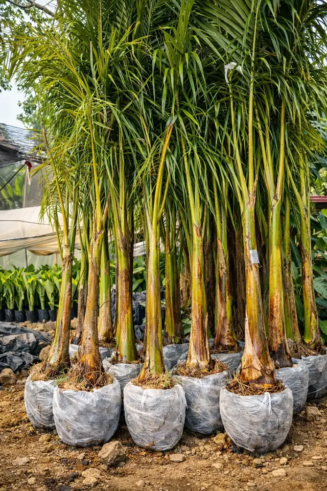
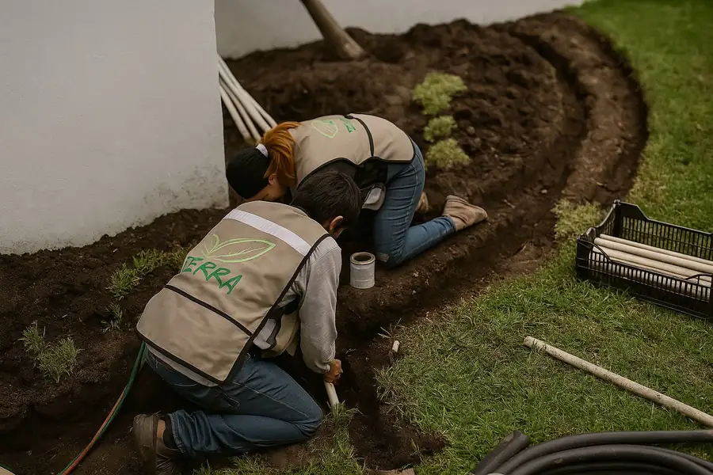
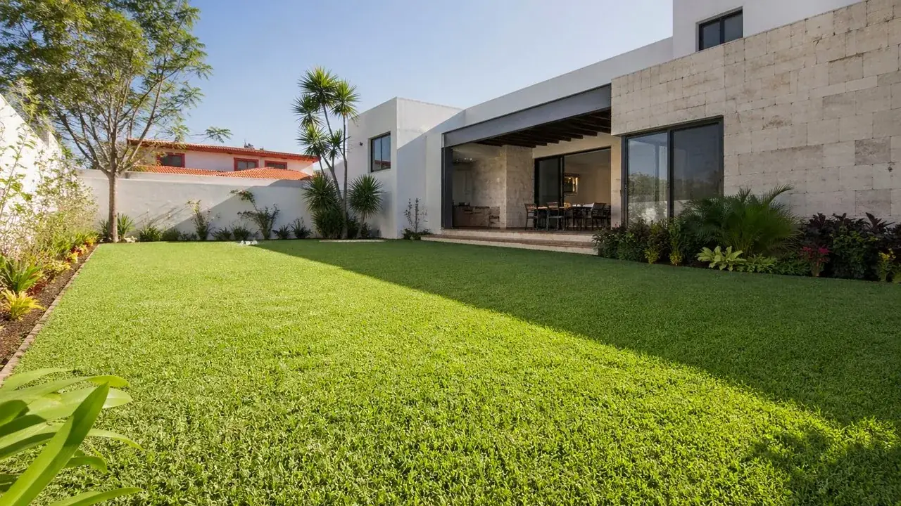
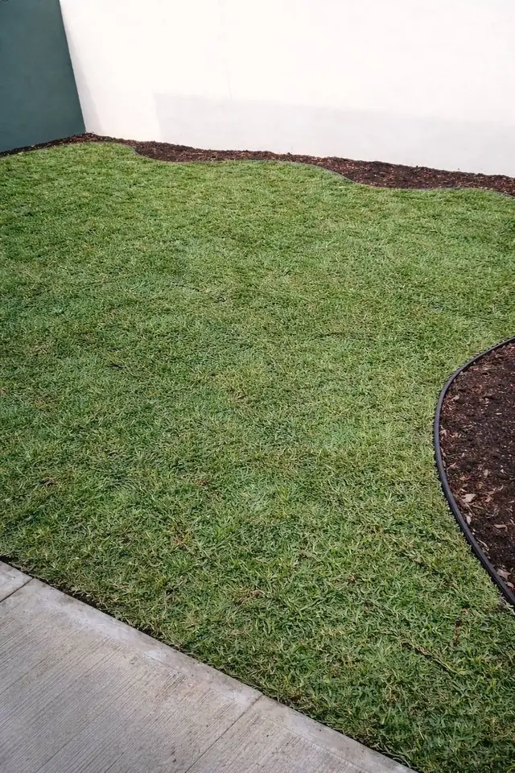

Vivero y jardinería · Tampico, Madero y Altamira
Pasto en rollo, jardines y plantas en Tampico y Madero.
Somos vivero y cuadrilla en Cd. Madero desde 2007. Vendemos pasto San Agustín en rollo, diseñamos y cuidamos jardines, y tenemos más de 200 variedades de plantas. El precio va por delante.
Pasto · 01Con IVA
Pasto San Agustín
Stenotaphrum secundatum
Solo pasto, tú lo instalas$85 /m²
Ejemplo: 8 × 6 m = 48 m² instalado × $120 = $5,760.
Respondemos en menos de 1 hora en horario · Lun a vie 9 a 18 h, sáb 9 a 14 h
También: diseño · mantenimiento · riego · palmas · empresas · pasto sintético con envío

- Empresa
- Viveros TerraVivero, pasto y jardinería
- Registro
- REPSE 773725Contratos con empresas
- Facturación
- CFDI 4.0Persona física o moral
- Desde
- 2007En Cd. Madero y Tampico
- Showroom
- Obregón 209 SurFrente a Walmart, entrando por Banamex
- Instalado
- +500,000 m²En Tamaulipas y la Huasteca
01Qué hacemos
Cinco formas de trabajar con nosotros, cada una con su precio.
Para que llegues a la plática sabiendo cuánto cuesta. Donde dice “desde”, el total depende de tus metros y del terreno.

01Pasto natural
San Agustín en rollo, cortado para tu pedido. $85/m² solo pasto; instalado en un día.desde $120 /m² instalado
02Pasto sintético
9 modelos con envío a todo México. El envío se cobra por rollo, según tu estado.desde $139 /m² material
03Diseño, mantenimiento y riego
Plan Terra de diseño desde $3,000. Mantenimiento con poda, fertilización y control de plagas.desde $750 /mes
04Plantas y palmas
Más de 200 variedades en el vivero. Las que sembramos llevan 30 días de garantía de arraigo.desde $250 palma chica
05Empresas y constructoras
Mayoreo de pasto (solo pasto) desde 500 m², mantenimiento recurrente y entrega por etapas.desde $60 /m² mayoreo
02Medidor
Mide tu patio. Te decimos cuánto cuesta.
Escribe el largo y el ancho, como si caminaras el jardín con una cinta. El cálculo se llena en la etiqueta y viaja contigo al WhatsApp: no lo tienes que explicar dos veces.
Tu etiquetaEstimado
8.00 × 6.00 m = 48 m²
Stenotaphrum secundatum
48 m² × desde $120/m², con IVA. Al medir te damos el precio cerrado.
O 6 mensualidades de $1,103 con tarjeta de crédito (total $6,618).
Mandar esta etiqueta03Jardines entregados
Fotos de obra, no de catálogo.
Cada foto lleva su pie: dónde y en qué etapa. Así ves lo que entregamos, no una promesa.


4.6 en Google (24 reseñas)+500,000 m² instalados en Tamaulipas y la HuastecaDesde 2007 en Cd. Madero
Empresas que nos han contratado
04Cómo trabajamos
Cuatro pasos. Cada quien sabe qué le toca.
Lo que hace que un jardín se logre es repartir bien el trabajo. Por eso cada paso dice de quién es.
Nos mandas medidas y foto Tú
Día 0 · por WhatsApp
Tu colonia, los metros aproximados y una foto del espacio. Respondemos en menos de 1 hora en horario.
Medimos y decidimos Juntos
Visita sin costo
Recorremos el espacio contigo. Si hace falta tierra negra o nivelación, te decimos cuánto cuesta antes de empezar.
Instalamos en un día Nosotros
Día de instalación
El pasto llega del campo cada semana, generalmente el viernes, y va directo a tu jardín.
El primer riego Tú
Días 1 a 20
El primer riego lo haces tú: te enseñamos cómo y te dejamos el protocolo de 20 días. Arraiga en 15 a 20 días.
05Precios
Lista de precios, sin letra chica.
Con IVA. Donde dice “desde”, el total depende de tus metros y del terreno: al medir te damos el precio cerrado.
| Concepto | Unidad | Precio |
|---|---|---|
| Pasto San Agustín instaladoPreparación básica del suelo, tendido en un día y garantía de arraigo de 15 a 20 días. | /m² | desde$120 |
| Pasto San Agustín, solo el pastoRollo cortado para tu pedido. Recoges en el vivero o te lo llevamos. | /m² | $85 |
| Mayoreo de pasto, solo pastoPedidos de 500 m² o más, con entregas por etapas y factura CFDI 4.0. | /m² | desde$60 |
| Pasto sintético, material9 modelos en rollo de 2 × 25 m. Envío a todo México, cobrado por rollo. | /m² | desde$139 |
| Mantenimiento de jardínPoda, fertilización y control de plagas. Residencial e industrial. | /mes | desde$750 |
| Diseño de jardín, Plan TerraVisita, propuesta de diseño y lista de materiales. | /proyecto | desde$3,000 |
- 3 mensualidades
- desde $2,000
- 6 mensualidades
- desde $5,000
- 9 mensualidades
- desde $15,000
- 12 mensualidades
- desde $15,000
Montos mínimos de cotización por plazo. El total a plazos es mayor que el de contado y te lo mostramos antes de enviarte el link de pago. Tu banco debe aceptar el plan.
06Preguntas
Lo que nos preguntan antes de empezar.
¿Cuánto cuesta ponerle pasto a mi jardín?
El pasto San Agustín cuesta $85/m² solo el pasto y desde $120/m² instalado, con IVA. Ejemplo: un patio de 8 × 6 m son 48 m²; instalado, 48 × $120 = $5,760. La visita para medir no tiene costo.
¿Cuánto tarda en arraigar?
De 15 a 20 días con riego abundante y diario. El primer riego lo haces tú: antes de irnos te enseñamos cómo y te dejamos el protocolo de 20 días.
¿Y si una parte no arraiga?
Con instalación contratada y siguiendo el protocolo de riego, si una sección no arraiga en esos 15 a 20 días, la reponemos sin costo. Las condiciones están en Políticas y garantías.
¿Puedo pagar en mensualidades?
Sí, en mensualidades con tarjeta de crédito: 3 desde $2,000; 3 o 6 desde $5,000; y 3, 6, 9 o 12 desde $15,000. El total a plazos es mayor que el de contado y te lo mostramos antes de enviarte el link de pago.
¿Dónde están? ¿Facturan?
En Av. Álvaro Obregón 209 Sur, Col. Ampliación Unidad Nacional, Cd. Madero: frente a Walmart, entrando por Banamex. Damos factura CFDI 4.0 a persona física o moral, y tenemos registro REPSE 773725.
Mándanos tus medidas y una foto del espacio.
Tu colonia, los metros aproximados y qué quieres hacer. Si hace falta, vamos a medir sin costo.
Respondemos en menos de 1 hora en horario · Lun a vie 9 a 18 h, sáb 9 a 14 h